Internal Combustion Engines:
Components and Auxiliaries
5
Learning Outcome
When you complete this learning material, you will be able to:
Explain the design, selection, and components of reciprocating internal combustion engine installations including auxiliaries.
Learning Objectives
You will specifically be able to complete the following tasks:
- 1. Explain design, applications, and selection criteria for the different types of reciprocating internal combustion engines.
- 2. Explain fuels and combustion processes and fuels used by internal combustion engines.
- 3. Describe the design of internal combustion engine scavenging and supercharging arrangements.
- 4. Describe the design and components of internal combustion engine fuel conditioning systems, injection systems, and ignition systems.
- 5. Describe the design and components of internal combustion engine cooling systems and cooling water conditioning systems.
- 6. Describe the purpose, design and components of internal combustion engine lubricating oil systems.
- 7. State the purpose and describe the control of a typical internal combustion engine including the operation of safety devices.
Objective 1
Explain design, application, and selection criteria for the different types of reciprocating internal combustion engines
DESIGN
Reciprocating internal combustion engines are divided into either spark-ignition (SI) or compression-ignition (CI) types. They can operate in either a two-stroke or four-stroke mode. This results in four possible combinations. The two-stroke compression-ignition engine and the four-stroke spark-ignition engine are the most common in industrial applications.
THE FOUR-STROKE CYCLE
The four-stroke cycle occurs over two rotations of the engine, as illustrated in Fig. 1. It consists of the following steps:
- • Induction
- • Compression
- • Power
- • Exhaust
Induction
As the piston moves down, air is drawn into the cylinder through the intake port. The exhaust valve then closes. In spark-ignition engines, a mixture of air and fuel is drawn into the cylinder — unless direct fuel injection is used.
Compression
The intake and exhaust valves are closed and the air (or air-fuel mixture) is compressed. In spark-ignition engines, an electric spark ignites the air-fuel mixture just before top dead centre (TDC) and starts the combustion process. In compression-ignition engines, or fuel injected spark-ignition engines, fuel is injected prior to top dead centre after which combustion occurs.
Expansion
In spark-ignition engines, combustion is largely finished at the beginning of the power stroke. The hot gases expand and force the piston down from top dead centre. The exhaust valve opens just before the end of the stroke. In compression-ignition engines, combustion continues for most of the power stroke.
Exhaust
The exhaust valve remains open and the products of combustion are exhausted to the atmosphere. At the end of this stroke, the exhaust valve closes and the intake valve opens. The process then repeats itself.
![Figure 1: Four-Stroke Cycle. A diagram showing four stages of a four-stroke engine: Induction, Compression, Expansion, and Exhaust. Each stage shows a cross-section of the engine with the piston, connecting rod, and crankshaft. In the Induction stage, the intake valve is open, and an arrow points to the 'Air-Fuel Mixture from Carburetor'. In the Compression stage, both valves are closed. In the Expansion stage, both valves are closed. In the Exhaust stage, the exhaust valve is open, and an arrow points to 'Exhaust to Silencer'.](b615ff07e8a0f467f0a6f4783c4463eb_img.jpg)
Figure 1
Four-Stroke Cycle
THE TWO-STROKE CYCLE
As shown in Fig. 2, the two-stroke cycle takes place over one revolution of the engine with each stroke combining two of the strokes of a four-stroke cycle. To accommodate this, the piston stroke must be longer. One advantage is that no intake or exhaust valves are needed since the piston covers and uncovers the intake (a) and exhaust ports (b).
At the beginning of the first stroke, the intake ports are uncovered. Fresh air then enters the cylinder while the exhaust ports are still open to exhaust the burnt gases from the previous combustion. Once the piston moves up and covers the ports, compression begins. Fuel injection and self-ignition occur before top dead centre. Meanwhile, fresh air is drawn into the crankcase through the non-return inlet valve.
Combustion continues for much of the power stroke at close to constant pressure. The fresh air in the crankcase is partially pressurized during this part of the stroke to assist with induction. Toward the end of the stroke, the exhaust ports, and then the intake ports, are uncovered.
![Figure 2: Two-Stroke Cycle. The diagram shows four sequential cross-sectional views of a two-stroke engine cylinder. The first view shows the piston at the bottom with the 'Spark Plug or Fuel Nozzle' at the top, 'Intake Ports' on the right side of the cylinder wall, and 'Exhaust Ports' on the left. The second view shows the piston moving upwards, compressing the mixture. The third view shows the piston at the top with the spark plug firing, igniting the mixture. The fourth view shows the piston moving downwards, with the 'Air Inlet' on the left side of the cylinder wall allowing fresh mixture to enter as the exhaust ports open.](bb08c83fc8939517c6803d65c69dd06b_img.jpg)
Figure 2
Two-Stroke Cycle
SPARK-IGNITION ENGINES
In spark-ignition engines, a spark ignites the air-fuel mixture. Fuel can be pre-mixed in a carburetor or injected directly into the cylinder. Compression ratios, limited by the need to prevent pre-ignition, or knock , range from 7:1 to 10:1. Supercharging, or pre-compression of intake air, is used to increase power output.
The thermodynamic cycle for spark-ignited engines is also known as the Otto cycle. The ideal description of a thermodynamic cycle is shown in Fig. 3(a) along with the more realistic version in Fig. 3(b). The numbers 1 to 4 correspond to the four strokes of the four-stroke cycle.
Since most combustion takes place while the piston is approaching top dead centre, spark-ignition is said to be a constant volume process. This is not strictly true as can be seen in Fig. 3(b). Once combustion is finished, power is produced by expansion of the hot gases. The combusted mixture is close to atmospheric pressure at the end of the stroke.
![Figure 3: The Spark Ignited Four-Stroke Cycle. (a) Ideal Cycle: A P-V diagram showing four states (1, 2, 3, 4) connected by smooth curves. State 3 is at the top left, labeled 'T. D. C.' (Top Dead Centre). Arrows indicate a clockwise cycle: 1 to 2 (compression), 2 to 3 (combustion), 3 to 4 (expansion), and 4 to 1 (exhaust). (b) Actual cycle: A more detailed P-V diagram. It shows the 'CLEARANCE VOLUME' at the top and 'SWEEP VOLUME' as the area under the curve between the top and bottom. Key points include 'Spark' near state 2, 'END OF COMBUSTION' near state 3, and 'EXHAUST PORT OPENING' near state 4.](431b8889a0e7f676f0eef40859590349_img.jpg)
(a) Ideal Cycle
(b) Actual cycle
Figure 3
The Spark Ignited Four-Stroke Cycle
The swept volume is the volume traveled by the piston as it moves from bottom to top dead centre and is equal to the area of the piston times the length of the stroke.
The clearance volume is the volume trapped above the piston at top dead centre. Both of these are illustrated in Fig. 3. The compression ratio can be calculated from the clearance and swept volumes using the following equation:
$$ \text{Compression Ratio} = \frac{\text{Clearance Volume} + \text{Swept Volume}}{\text{Clearance Volume}} $$
Note: Since other factors, such as the timing of the opening and closing of inlet and exhaust valves, are also important, this is only an approximate compression ratio.
COMPRESSION-IGNITION ENGINES
In compression-ignition engines, spontaneous ignition occurs due to the rise in temperature caused by high compression ratios. This results in a more efficient engine. Compression ratios need to be higher than 12:1 to allow spontaneous combustion. Ratios of 15:1 to 20:1 are typical, but can be as high as 25:1.
The ideal description of a compression-ignition cycle is shown in Fig. 4(a) along with a more realistic version in Fig. 4(b). The numbers 1 to 4 correspond to the four strokes of the four-stroke cycle. In a two-stroke engine, induction and compression (steps 1 and 2) are combined into the first stroke, and power and exhaust (steps 3 and 4) are combined into the second stroke.
The rate of combustion in a compression ignition engine is controlled by injection of the fuel in order to limit the peak pressure. Combustion continues as the flame front advances. The process continues at essentially constant pressure although this is an approximation, as can be seen in Fig. 4(b).
![Figure 4: Comparison of Ideal and Actual Compression Ignited Four-Stroke Cycles. (a) Ideal Cycle: A P-V diagram showing a compression curve from point 1 to 2, a constant volume combustion curve from 2 to 3, an expansion curve from 3 to 4, and a compression curve from 4 back to 1. (b) Actual cycle: A P-V diagram showing a compression curve from 1 to 2, a combustion curve starting at 'START OF FUEL INJECTION' and ending at 'END OF COMBUSTION' (point 3), an expansion curve from 3 to 4, and a compression curve from 4 back to 1.](73c3e4508cae529acf4e6c7fa70b361a_img.jpg)
(a) Ideal Cycle
(b) Actual cycle
Figure 4
The Compression Ignited Four-Stroke Cycle
Comparison of Different Types of Engines
Although a complete discussion of the merits of two-stroke and four-stroke engines is not required here, it is worthwhile pointing out some key differences.
- • Two-stroke engines do not require intake and exhaust valves and are thus simpler, easier to maintain, and less expensive to build
- • Two-stroke engines produce power every stroke instead of every other stroke, and therefore produce more power for a given engine size and weight. This makes them noisier than four-stroke engines of the same size
- • Two-stroke engines are less efficient than four-stroke engines because the induction and exhaust processes are less complete. However, superchargers can be used to increase efficiency
- • Compression-ignition engines are more efficient than spark-ignition engines because they operate at higher compression ratios
- • Compression-ignition engines that burn diesel fuel produce excessive emissions and exhaust smoke that requires treatment
APPLICATIONS
Reciprocating internal combustion engines provide a cost-effective power source for:
- • Many types of vehicles
- • Standby and base load electrical power generators
- • Compressors
- • Pumps
- • Marine applications
- • Industrial equipment applications
Power output ranges from very small (less than 5 kW) to very large (up to 50 000 kW), but the most important range for oil and gas power generation applications is 500kW-5000 kW. The focus of this module is stationary applications for power generation and mechanical drive equipment using natural gas as a fuel.
Fig. 5 shows a typical 12-cylinder natural gas lean burn engine used to drive a compressor. It has a special fuel system that minimizes exhaust emissions.
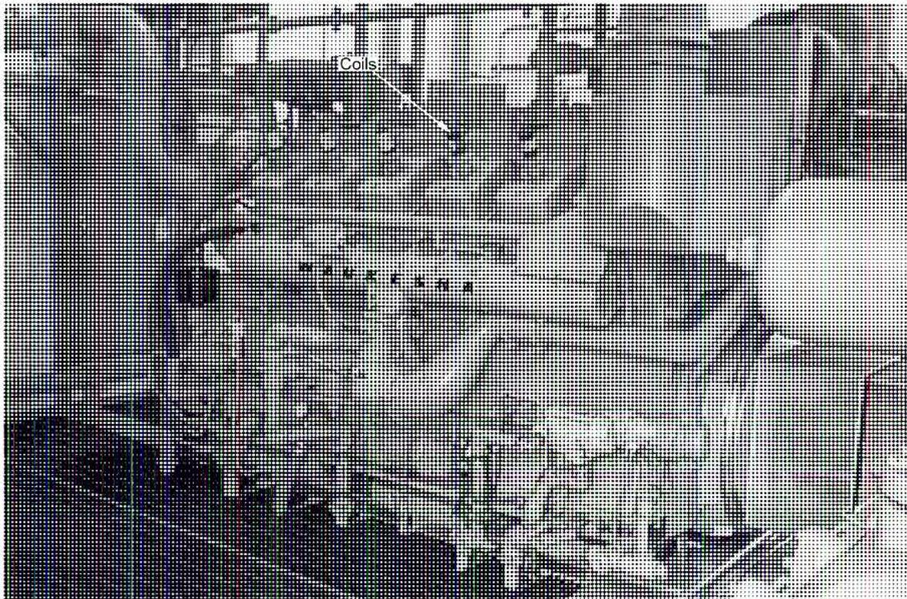
Figure 5
Typical 12-Cylinder Natural Gas Lean Burn Engine
(Courtesy of Tom Van Hardeveld)
SELECTION
The successful application of any engine depends upon satisfying requirements related to performance, operating costs, and expected engine life. This requires a thorough understanding of available designs, engine rating systems, and knowledge of tradeoffs that might be necessary.
Selecting an internal combustion engine for a specific application depends on factors such as:
- • Type of fuel available
- • Expected performance ratings and load cycles
- • Configuration options
- • Installation requirements and constraints such as weight and size
- • Maintenance resources available
- • Life-cycle costs - capital, operating, and maintenance
- • Noise and exhaust emission requirements
The type of fuel used is a major consideration. The cleanest and most readily available fuel should be used. Pipeline quality natural gas is desirable because it delivers the most efficient, cost effective and environmentally acceptable solution. Lower quality gaseous fuels, such as landfill or sewage gas, require special considerations and could provide less desirable operation because of poor efficiency and lower power output. Diesel fuels, such as kerosene, provide reliable operation. However, they may be unsuitable where emissions are an issue, or where fuel sources are not easily accessible. Lower grade liquid fuels may be cost-effective for lower speed engines, but require fuel treatment and could result in higher maintenance costs.
Configuration options include whether the engine is naturally aspirated (intake air is not compressed) or turbocharged. A naturally aspirated engine is simpler because it has less additional equipment, but performance is affected by altitude and ambient temperatures. A turbocharged engine is more complex because it has a turbocharger and an aftercooler, but it is less affected by external factors and produces more power.
Expected load cycles should be carefully analyzed for feasibility, impact on operation, and maintenance requirements. Many engines can operate for extended periods at peak load, but this increases maintenance effort and costs. Similarly, operation at light loads is possible, but not desirable for longer periods, as operation may become erratic and cylinders might be over lubricated. Estimating load patterns for power generation can be quite complicated because of daily and seasonal load variations (weather and temperature).
Most gas engines are available with low or high compression. High compression is restricted to high quality fuels. Low compression is used for lower quality fuels, and where less stringent emission requirements are in effect.
When selecting an internal combustion engine, it is important to consult with the manufacturer on recommendations for proper application, fuel rating, and approved equipment configuration. Most manufacturers have a method for calculating fuel rating that prevents detonation (engine knocking).
Objective 2
Explain fuels and combustion processes used by internal combustion engines.
FUELS
Most fuels used in internal combustion engines are based on hydrocarbons (hydrogen and carbon). The main source is petroleum, either in the form of natural gas (methane), or a grade of liquid petroleum — ranging from light condensates (e.g. propane) to medium hydrocarbons (e.g. gasoline and kerosene) to heavier oils (e.g. heavy distillates, residuals, and crude oil). Another source is low energy gas fuel obtained from landfills, bio-gas digesters, or coal.
Gaseous fuels are a combination of a hydrocarbon, inert gases such as nitrogen, and possibly contaminants such as sulphur. The overall composition must be carefully considered since it affects combustion processes and emissions.
Liquid fuels may also contain contaminants or other products that can adversely affect engine performance and increase emissions.
Heating value is an important fuel characteristic. This is the amount of energy obtained from a standard amount of fuel when it is fully combusted. It is normally expressed as lower heating value (LHV) . When fuel is burned, water is one of the products of combustion. It is converted to steam during combustion and remains in vapour form in the exhaust. This extra energy cannot be used, and the amount of heat left over for conversion to work is referred to as the lower heating value.
Various approaches are used to determine the suitability of a fuel for combustion and its resistance to detonation, or knock. One common method is the octane rating system developed for liquid fuels. This was adapted for gaseous fuels, but the results have not proven satisfactory for the wide range of fuels in use. Therefore, manufacturers have developed specific methods to evaluate fuels and relate them to engine rating, design configuration, and control limits.
Gaseous Fuels
Many internal combustion engines use natural gas as a fuel source. However, there are many types of natural gas. The specific composition needs to be considered before the gas can be used.
The use of contaminated fuel leads to increased maintenance. The presence of liquids or condensates in natural gas causes pre-ignition, detonation, and other combustion problems. Compounds such as hydrogen sulphide or chlorinated hydrocarbons accelerate corrosion through the formation of acids. Natural gas with high levels of these compounds needs to be treated.
In its original state, natural gas may be referred to as field gas, wet gas (due to the presence of hydrocarbon liquids), or wellhead gas. It is generally unsuitable for use in internal combustion engines. If it contains large amounts of hydrogen sulphide ( \( H_2S \) ), it is referred to as sour gas, and is highly corrosive and damaging to an engine.
Clean natural gas, sometimes called dry pipeline gas or sweet gas, consists of 85%-95% methane. The remainder is usually a mixture of ethane, propane, butane, and other heavier hydrocarbons, mostly in vapour form. It provides the best results for internal combustion engines with respect to efficiency, engine life, performance, and emissions.
Natural gas with a low heating value can be produced from biomass (digester gas), sanitary landfills, or a manufacturing process such as methane recovery from coal. These gases often contain harmful by-products which require special treatment and filtering. In addition, fuel systems may need to be changed to accommodate the higher volume of these fuels before they can be used.
Table 1 shows typical heating values for different gaseous fuels, each of which requires a different carburetion and fuel system configuration.
Table 1
Typical Heating Values for Gas Fuels
(Courtesy of Finning-Caterpillar)
| High Energy Gas | 55.0 – 94.3 MJ/Nm 3 |
| Natural Gas | 31.4 – 55.0 MJ/Nm 3 |
| Low Energy Natural Gas | 23.6 – 31.4 MJ/Nm 3 |
| Biogas | 17.7 – 25.5 MJ/Nm 3 |
| Landfill Gas | 15.7 – 23.6 MJ/Nm 3 |
Liquid Fuels
Diesel fuel is the most common fuel used in compression-ignition engines. The most important characteristics of good diesel fuel are cleanliness, self-ignition capability, viscosity, volatility, and temperature.
Diesel fuels are generally sufficiently clean when produced at the refinery, but there is substantial opportunity for contamination by dirt, water, or other substances during transportation and storage.
The self-ignition capability of a diesel fuel is indicated by its cetane number. This is the measure of the ignition quality of the fuel, and is more important for higher speed engines than for lower speed ones. If a low cetane number fuel is used in a high speed engine, a considerable quantity of liquid will accumulate before ignition takes place, resulting in engine knock.
Viscosity is important for heavier fuels or at lower temperatures. Heating may be required in these cases.
At low temperatures, fuels can form waxy deposits which plug filters and cause gummy deposits to build up in the cylinder. Fuels with a higher volatility prevent the build up of deposits on cylinder walls.
Higher speed diesel engines are only suited to run on No. 1 and No. 2 distillate (kerosene) but lower speed engines can use heavier fuels such as low grade residual oils and Bunker C.
Additives may be used to:
- • Improve cetane number
- • Inhibit the formation of combustion deposits
- • Absorb water
- • Reduce foaming
COMBUSTION
Every fuel requires a precise amount of air to produce combustion. The stoichiometric ratio is the chemically perfect air/fuel ratio (AFR) that results in complete combustion. The equivalence ratio is the ratio of the stoichiometric ratio to the actual air/fuel ratio. If the equivalence ratio is less than 1, the mixture is lean. If it is greater than 1, it is rich . Maximum power is generated by a mixture that is about 10% rich (equivalence ratio of 1.1). The best fuel consumption is produced by a lean mixture (equivalence ratio of 0.9, or 10% lean).
The inverse of the equivalence ratio ( \( 1/R \) ), called the Excess Air Ratio or Lambda ( \( \lambda \) ), is also used. In this case, values greater than 1 are lean and values less than 1 are rich.
Spark Ignition
One of the main differences between spark-ignition and compression-ignition engines is the type of combustion. In spark-ignition engines, the fuel is pre-mixed with air in a carburetor using an air/fuel ratio that is close to stoichiometric. If the mixture is too lean or too rich, ignition and combustion may not occur, might be delayed, or could be erratic. Compression-ignition engines use fuel injection instead.
When the spark occurs, the initial onset of combustion is quite slow, and there is a short delay before rapid combustion spreads through the cylinder. Thus, the point of ignition is always in advance of top dead centre as shown in Fig. 6.
![Figure 6: Cylinder Pressure for a Spark-ignition Engine. The figure contains two diagrams. The left diagram shows two cross-sections of a cylinder. The top one illustrates 'Controlled Propagation of Flame' from a 'Spark Plug' through a 'Region of Controlled Flame Propagation'. The bottom one shows 'Self-Ignition in "End-Gas"' occurring ahead of the flame front. The right diagram is a graph of Pressure (P) versus Crank Angle or Time. It shows a 'Delay' period after 'Spark' ignition, followed by a sharp peak labeled 'Detonation and Self-Ignition', and a broader, lower peak labeled 'Controlled Combustion'. The x-axis is marked at 90° before and after 0° O.D.C.](7c1f9e78e0f033d391b687f1652f6e47_img.jpg)
Figure 6
Cylinder Pressure for a Spark-ignition Engine
As combustion occurs, the expanding burned gas compresses and heats the remaining unburned gas. This can cause detonation, or knock, if the unburned gas spontaneously self-ignites ahead of the flame front. The severe pressure wave caused by detonation can be very destructive to mechanical components.
Knock should not be confused with pre-ignition, which happens when a hot surface, such as the tip of a spark plug, ignites the unburned gas prior to spark-ignition. Increasing inlet air temperature decreases the knock margin; therefore, detonation may occur more frequently in the summer.
Compression Ignition
In compression-ignition engines fuel is not pre-mixed with air; it is injected into the cylinder. Combustion occurs spontaneously along a flame front where stoichiometric conditions exist. Since combustion is caused by compression, not by a spark, pre-ignition cannot take place.
Objective 3
Describe the design of internal combustion engine scavenging and supercharging arrangements.
SCAVENGING
Scavenging is the removal of combusted gases and the replacement with intake of fresh air (or air-fuel mixture).
The intake and exhaust processes and the geometry of the cylinder, create turbulence. Turbulence is important in speeding up combustion.
In four-stroke engines, because complete strokes are dedicated to intake and to exhaust, scavenging can take place almost completely. Fig. 7(a) shows loop scavenging. Fig. 7(b) shows cross scavenging while Fig. 7(c) is the uniform method of scavenging with exhaust valve.
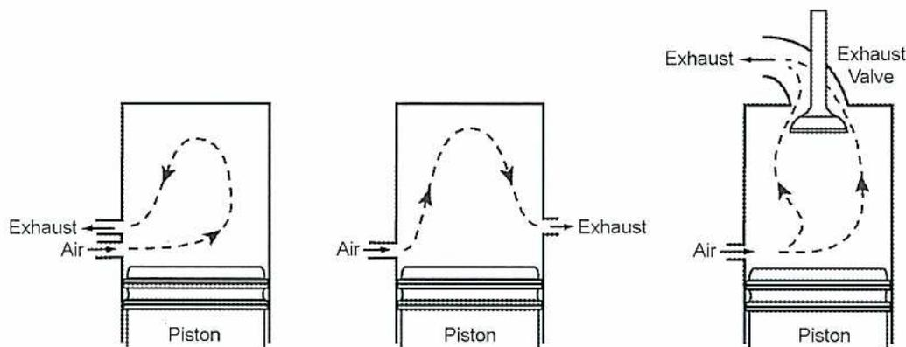
Figure 7
Two-Stroke Mixing Approaches
SUPERCHARGING
Several methods, including supercharging, are used to increase mixing and swirling, and thus improve the intake, exhaust, and combustion processes. Supercharging pre-compresses the intake air to increase mass flow through the engine. Increasing mass flow directly increases power output. Supercharging can increase the power output for a given engine size by 20%-40%. However, it has almost no effect on efficiency. In two-stroke engines, supercharging also improves scavenging.
Supercharging can be accomplished in two ways:
- • Turbochargers
- • Superchargers
Turbochargers
Turbochargers use a compressor which is attached to a turbine driven by exhaust gases. Turbochargers are common on many engines even though they increase the mechanical complexity of the engine and its control. Fig. 8 shows a turbocharger layout with a centrifugal compressor and an axial turbine.
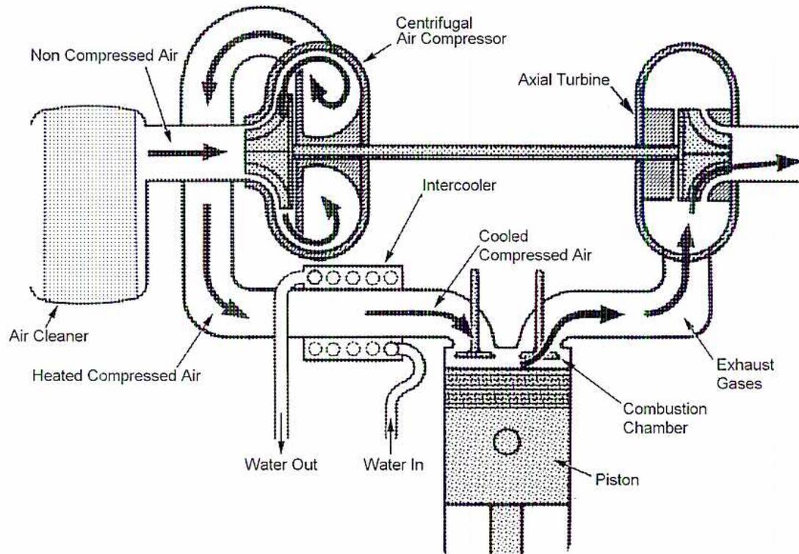
The diagram illustrates the components and airflow of a turbocharged engine. On the left, an 'Air Cleaner' draws in 'Non Compressed Air'. This air is drawn into a 'Centrifugal Air Compressor', which is connected by a shaft to an 'Axial Turbine'. The compressed air from the compressor is 'Heated Compressed Air', which then passes through an 'Intercooler'. The intercooler has 'Water In' and 'Water Out' connections. The output of the intercooler is 'Cooled Compressed Air', which is then directed into the 'Combustion Chamber' of an engine. The combustion chamber contains a 'Piston'. 'Exhaust Gases' from the combustion chamber drive the 'Axial Turbine'.
Figure 8
Turbocharger Layout
(Courtesy of Waukesha Engine)
On V-type engines, twin turbochargers are often used as shown in Fig. 9.
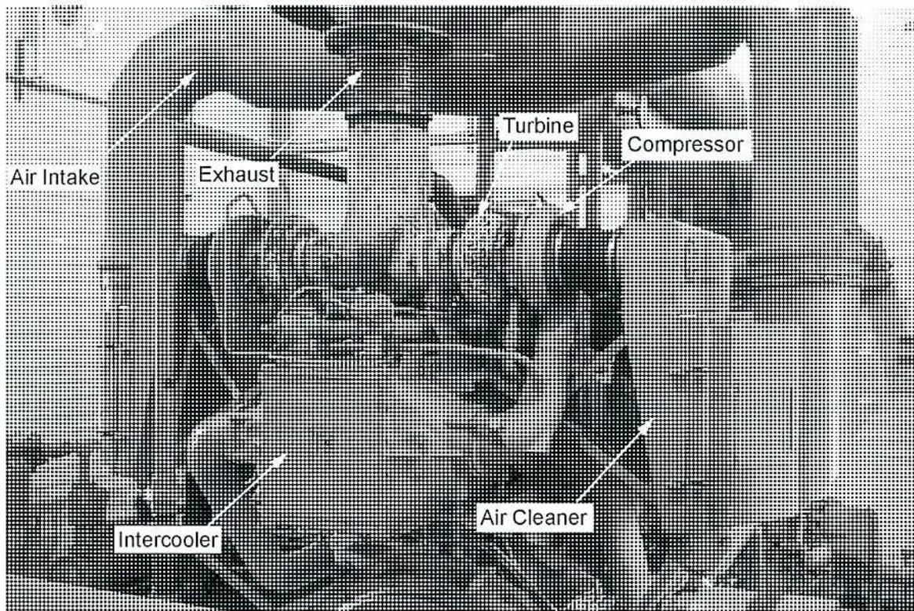
Figure 9
Typical Turbocharger for a Natural Gas Engine
(Courtesy of Tom Van Hardevelde)
An intercooler, shown in Fig. 9, is often inserted before the intake manifold because compression increases air temperature and reduces the effect of increased density.
The amount of boost provided by the compressor is controlled by a wastegate in the exhaust which dumps or bypasses unneeded exhaust air before it reaches the turbine. The wastegate can be installed before the exhaust turbine.
Superchargers
Superchargers make use of a blower or compressor that is directly coupled to the engine. Superchargers are not common in industrial applications because they are less efficient than turbochargers. However, they respond faster to load changes (this is more important in auto racing than in power generation). Superchargers usually consist of a positive displacement compressor, such as the ROOTS™ blower shown in Fig. 10.
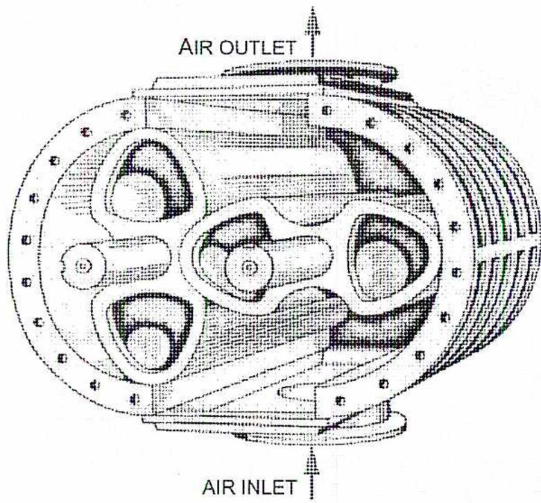
A technical line drawing of a ROOTS™ Blower, viewed from an isometric perspective. The blower has a circular casing with a flange secured by numerous bolts. Inside, two interlocking lobes are visible, mounted on a central shaft. At the top, an arrow points upwards from a port labeled "AIR OUTLET". At the bottom, an arrow points upwards from a port labeled "AIR INLET". The drawing uses cross-hatching to indicate the three-dimensional form of the internal components.
Figure 10
ROOTS™ Blower
Objective 4
Describe the design and components of internal combustion engine fuel conditioning systems, injection systems, and ignition systems.
FUEL CONDITIONING SYSTEMS
Spark-ignition engines pre-mix air and fuel using carburetors. Compression-ignition engines use fuel injection systems. Mechanical engine control has largely been replaced by flexible and adaptable electronic control systems that optimize engine operation and efficiency. These systems adjust ignition timing to minimize fuel consumption without causing knock, and may use an oxygen sensor in the exhaust to optimize efficiency (see Fig. 14). They provide protection against abnormal conditions, such as overspeed, and ensure that engine operation does not exceed various limits.
FUEL INJECTION SYSTEMS
Fuel injection systems are used on the following types of internal combustion engines:
- • Spark-ignition
- • Compression ignition
Spark-Ignition Engines
Many fuel systems burn a lean mixture to reduce emissions such as nitrogen oxides (NO x ). Since lean fuels can cause combustion problems, a prechamber, which burns a rich mixture, is added to provide a torch that ignites and combusts the lean mixture. An example of a prechamber design, also called stratified combustion, is shown in Fig. 11.
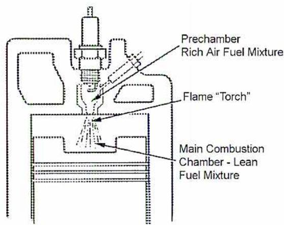
Figure 11
Pre-Chamber Design with Stratified Combustion
(Courtesy of Waukesha Engine)
The design of a lean-burn fuel system is shown in Fig. 12. The main air/gas mixer (carburetor), which has a governor controlled throttle, mixes the fuel and air. A pressure balance line between the carburetor and main gas pressure regulator maintains a constant gas-over-air pressure differential. The main gas pressure regulator ensures that natural gas is provided to the main air/gas mixer, and to the prechamber air/gas mixer, at the correct pressure. The prechamber air-fuel mixture is admitted into the cylinder through a separate manifold and special admission valves.
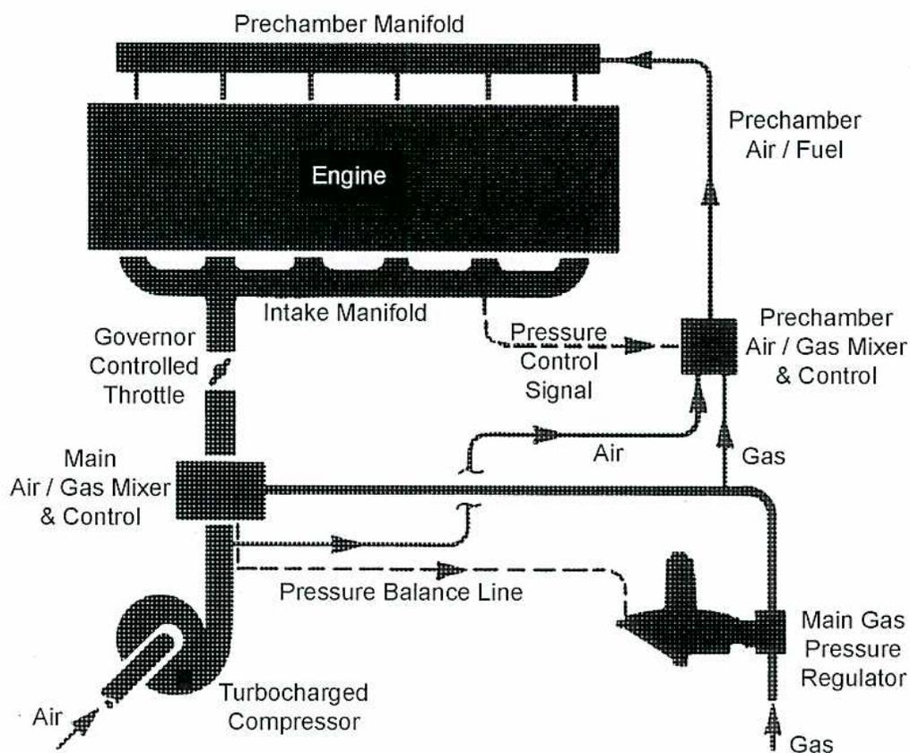
The diagram illustrates a lean burn fuel system for an engine. At the top, a 'Prechamber Manifold' is connected to an 'Engine'. Below the engine is an 'Intake Manifold'. A 'Governor Controlled Throttle' is located on the intake manifold. Air enters from the bottom through a 'Turbocharged Compressor'. A 'Main Air / Gas Mixer & Control' unit is positioned above the compressor. A 'Pressure Balance Line' connects this mixer to a 'Main Gas Pressure Regulator'. Gas enters from the bottom right into the main gas pressure regulator. A 'Prechamber Air / Gas Mixer & Control' unit receives 'Air' from the main mixer and 'Gas' from the main gas pressure regulator. This unit sends a 'Pressure Control Signal' to the intake manifold and provides 'Prechamber Air / Fuel' to the prechamber manifold.
Figure 12
Lean Burn Fuel System
(Courtesy of Waukesha Engine)
Fig. 13 shows a close-up of the carburetor on the engine shown in Fig. 5. An air filter ensures a clean supply of air. The fuel supply has a fuel filter. It may also have a heater to keep the temperature of the natural gas above the dew point, and thus ensure that liquids are not introduced into the engine.
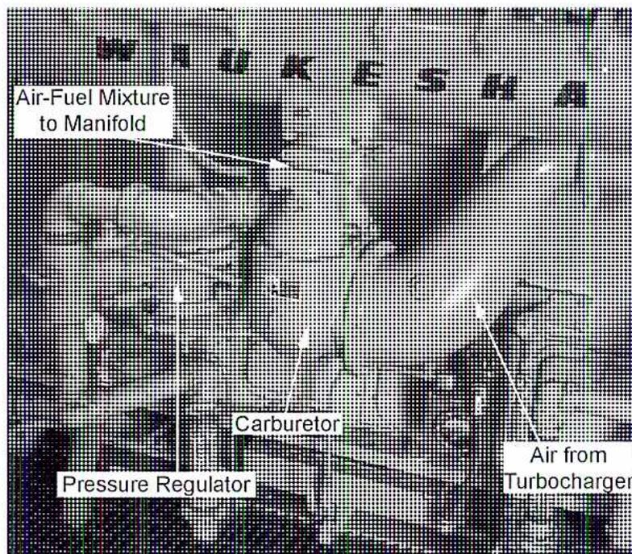
Figure 13
Example of a Carburetor for a Natural Gas Engine
(Courtesy of Tom Van Hardeveld)
Some engines have a separate air-fuel ratio control. This control, shown in Fig. 14, measures the amount of free oxygen in the exhaust and adjusts the air and fuel flows accordingly.
![Figure 14: A schematic diagram of an air-fuel ratio control system. It shows fuel and air paths leading to a 'Carburetor Mixer' and then to an 'Engine'. The fuel path includes a 'Pressure Regulator', 'Fuel Mass Flow Sensor', and 'Fuel Valve & Actuator'. The air path includes an 'Air Mass Flow Sensor' and a 'Turbocharger'. An 'Electronic Control' unit receives inputs from 'Desired Speed', 'Actual Speed', 'Air Flow', 'Fuel Flow', and an 'Oxygen Sensor' in the 'Exhaust Stack'. It controls the 'Fuel Valve & Actuator' and a 'Throttle Body Actuator'. A 'Speed Sensor' on the 'Flywheel' provides engine speed feedback.](e180f2b5fcbe8001554a7c0677cd3f82_img.jpg)
Figure 14
Example of an Air-Fuel Ratio Control
(Courtesy of Finning-Caterpillar)
Air-fuel controlled engines have several advantages:
- • They control emissions at constant levels despite variations in ambient temperature, fuel quality, speed, and load
- • They operate efficiently using a lean mixture that is close to misfire (failure to ignite properly)
- • High compression lean burn engines operate with a narrow margin between misfire and detonation
- • Air-fuel control ensures that engine operation stays within this band
Compressions-Ignition
Toward the end of the compression stroke, most compression-ignition engines inject fuel directly, or indirectly, into the cylinder using a solid (airless) injection system.
Indirect injection systems use a prechamber to speed up combustion and allow engines to run faster. Many different prechamber designs are used. Initial combustion occurs in the prechamber, and then the burning fuel-air mixture is injected into the main cylinder. This action produces swirling and turbulence that speeds up the rate of combustion. Indirect injection is not as effective in two-stroke engines since the increased turbulence interferes with the exhaust portion of the stroke and starting the engine is more difficult.
For slower engines, direct injection is more effective because rapid combustion is less important at lower speeds.
A typical direct fuel injection system for a small engine is shown in Fig. 15.
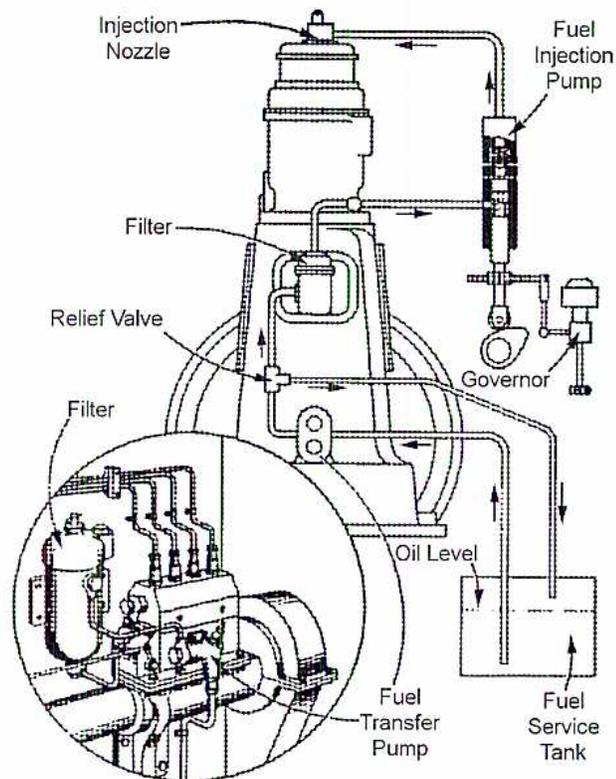
The diagram illustrates a fuel injection system for a diesel engine. At the bottom, a 'Fuel Service Tank' contains fuel, with an 'Oil Level' indicator. A 'Fuel Transfer Pump' draws fuel from the tank through a 'Filter'. The fuel is then sent to a 'Fuel Injection Pump'. A 'Governor' is connected to the injection pump. A 'Relief Valve' is located on the line between the transfer pump and the injection pump. From the injection pump, fuel is delivered to an 'Injection Nozzle'. A circular inset provides a detailed view of the injection pump's internal components, including multiple fuel lines and a 'Filter'.
Figure 15
Fuel Injection System
Fuel pumps control the load and speed of diesel engines by metering the amount of fuel supplied to the fuel injectors. An example of a mechanically controlled fuel pump is shown in Fig. 16. Fuel injectors are an important component of the ignition system since they provide an accurate high-pressure spray that is easily combustible.
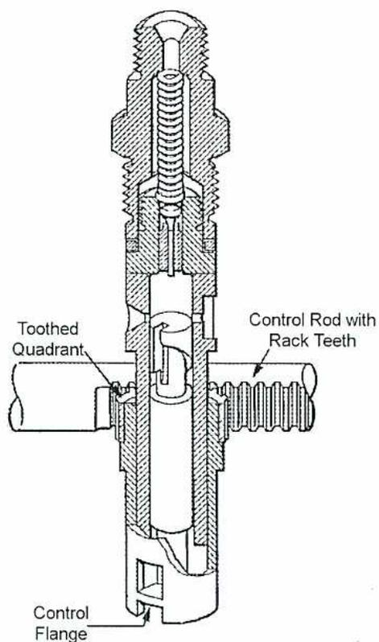
Figure 16
Fuel Pump
IGNITION SYSTEMS
Battery operated ignition systems are adequate for low compression engines. In Fig. 17, a primary coil, or transformer, boosts the voltage, and a distributor provides high voltage pulses to the spark plugs.
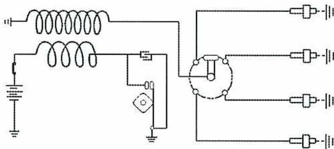
Figure 17
High Tension Battery Distribution Circuit
In Fig. 18, individual coils are used for each cylinder to minimize the length of the high voltage lines.
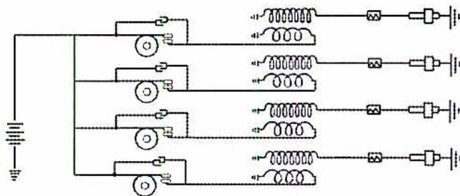
Figure 18
Low Tension Battery Distribution Circuit
High compression (1700 – 4300 kPa) spark-ignition engines require high voltage (25 000 to 30 000 volts) to produce an adequate spark. Special spark plugs are used that operate at low enough temperatures to prevent pre-ignition, yet high enough to promote rapid combustion and prevent carbon build up on the electrode.
High compression engines commonly use a magneto. This is a rotating magnet, driven from the engine that does not require a battery because it uses a changing magnetic field to produce its own current. The alternating current generated by the magneto is rectified to direct current and stored in a capacitor. Silicon controlled rectifiers release this electrical energy to high voltage coils located close to each cylinder. A pickup sensor, which reads magnetic reference marks on a timing disc, records the exact position of the crankshaft and tells each coil when to fire. The coils can be seen on top of each cylinder in Fig.5.
Fig. 19 shows a typical spark plug with a coil (high energy ignition transformer) mounted on each cylinder.
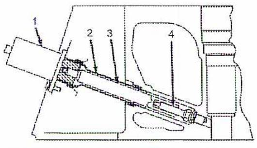
- 1 Coil
- 2 Tube
- 3 Extender with Spring Loaded Aluminum Rod
- 4 Spark Plug
Figure 19
Spark Plug and Ignition Coil
A magneto is shown in Fig. 20.
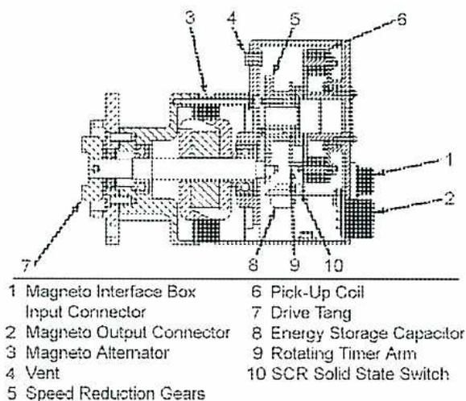
| 1 Magneto Interface Box | 6 Pick-Up Coil |
| Input Connector | 7 Drive Tang |
| 2 Magneto Output Connector | 8 Energy Storage Capacitor |
| 3 Magneto Alternator | 9 Rotating Timer Arm |
| 4 Vent | 10 SCR Solid State Switch |
| 5 Speed Reduction Gears |
Figure 20
Solid State Magneto
(Courtesy of Finning-Caterpillar)
Modern ignition timing systems are electronically controlled by variable ignition to enhance engine performance and prevent detonation. An example of an ignition timing system is shown in Fig. 21.
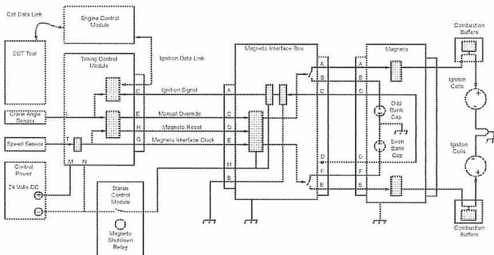
The diagram illustrates the Ignition Timing System architecture. On the left, an 'Engine Control Module' is connected to a 'Cat Data Link', a 'DDT Tool', and a 'Timing Control Module'. The 'Timing Control Module' receives inputs from a 'Crank Angle Sensor', a 'Speed Sensor', and 'Control Power' (24 Volts DC). It also connects to a 'Status Control Module' which includes a 'Magneto Shutdown Relay'. The 'Timing Control Module' sends an 'Ignition Signal' to a 'Magneto Interface Box'. The 'Magneto Interface Box' is connected to a 'Magneto' unit and has multiple output points (A, B, C, D, E, F, G, H, I). The 'Magneto' unit contains 'Odd Bank Cap' and 'Even Bank Cap' components. The 'Magneto Interface Box' also receives 'Ignition Data Link', 'Manual Override', 'Magneto Reset', and 'Magneto Interface Clock' signals. The 'Magneto' unit outputs are connected to 'Ignition Coils', which are further connected to 'Combustion Buffers'.
Figure 21
Ignition Timing System
(Courtesy of Finning-Caterpillar)
Objective 5
Describe the design and components of internal combustion engine cooling systems and cooling water conditioning systems.
PURPOSE OF COOLING
The purpose of engine cooling is three-fold:
- • To promote efficiency
- • To enhance combustion
- • To ensure mechanical reliability
Engine efficiency is improved when more air is inducted into the cylinder. When the cylinder walls are cooled, more air can be drawn into the cylinder. In spark-ignition engines, combustion is enhanced by having cooler cylinder walls which will also inhibit knock and detonation.
Mechanical reliability is adversely affected by high metal temperatures and thermal strain. In addition, if the temperature of the top rings on the cylinder exceeds 200°C, lubricants will degrade and fail to provide adequate protection. Thus, it is very important that the cooling system function properly since it has to remove about 20%-40% of the energy input into the engine.
COOLING WATER SYSTEMS
Most internal combustion engines use a mixture of water and industrial grade antifreeze (such as ethylene glycol) which contains various inhibitors and corrosion protectors. A 50/50 water to antifreeze mixture provides the best overall protection against freezing and boiling, but this can reduce the cooling efficiency by as much as 15%. A minimum of 30% antifreeze is usually recommended, but local conditions and manufacturer recommendations should be carefully checked. Cooling water samples should be taken periodically and checked for contaminants and antifreeze strength.
COOLING SYSTEM DESIGN AND COMPONENTS
Cooling systems normally use forced circulation. The coolant pump is powered by the engine, either by a gear or by belts. As shown in Fig. 22, the coolant circulates through the cylinder walls, the cylinder head, and the exhaust manifold. A thermostat (or multiple thermostats) divides the coolant between a direct return line and a cooling circuit that passes through the heat exchanger. The heat exchanger may use air or oil. A top-up reserve tank is often included. Fig. 22 also shows an auxiliary water pump that is used to feed the oil cooler.
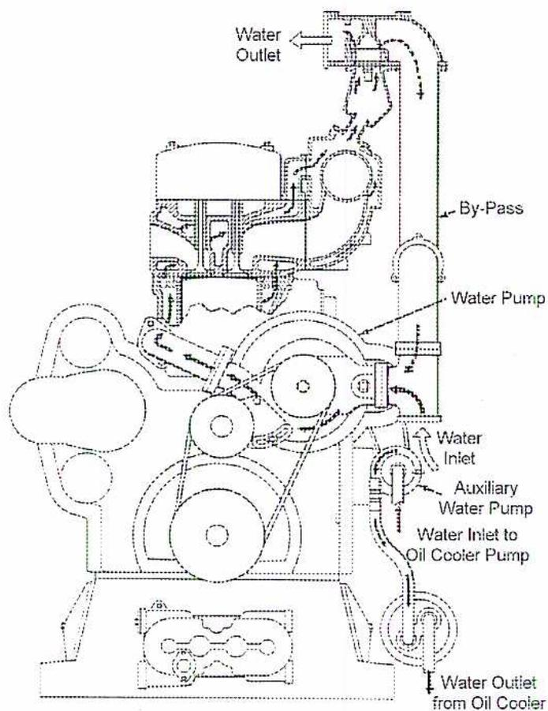
Figure 22
Cooling System
(Courtesy of Waukesha Engine)
There are many cooling system configurations. Fig. 23 shows an example of an air to air aftercooler engine. The type used depends on the application, and on whether or not there are other cooling requirements, such as gas compression. For cogeneration applications, the cooling system may be used to heat water sources for domestic or hot water heating.
![Schematic diagram of a cooling system for a compressor application. The diagram shows a central 'Engine' block connected to a 'Cooling Unit' on the left and a 'Compressor' (labeled 'Compr.') on the right. The 'Cooling Unit' contains four vertical sections: 'Air', 'Engine Water', 'Compressor Water', and 'Gas'. 'Hot Water' is shown exiting the engine and entering the 'Cooling Unit', while 'Cold Water' exits the 'Cooling Unit' and returns to the engine. Above the engine is a 'Carburetor' and an 'Air Cleaner'. 'Hot Air' is drawn from the 'Air Cleaner' through the carburetor into the engine. A 'Turbocharger' is connected to the engine's exhaust and the 'Compressor'. 'Gas' from a 'Gas Supply' is compressed by the 'Compr.' and then heated by the turbocharger before being sent to the engine. An 'Actuator with Valve Positioner' is shown at the top, controlling a valve that directs 'Hot Air' or 'Cold Air' (indicated by a dashed line) into the engine's intake system.](b230b8f21d8e82d55c0d311c8c32ef73_img.jpg)
Figure 23
Cooling System for Compressor Application
(Courtesy of Finning-Caterpillar)
Objective 6
Describe the purpose, design and components of internal combustion engine lubricating oil systems.
PURPOSE OF LUBRICATION SYSTEMS
Lubrication is critical to engine operation for the following reasons:
- • Minimizes friction losses of sliding and rotating surfaces
- • Reduces friction wear on moving components
- • Cools engine parts such as pistons that cannot be cooled directly by cooling water
- • Cleans the engine by flushing away wear particles
- • Helps seal piston rings in the cylinders
OIL PROPERTIES
Oil has several properties that are important for successful engine operation including:
- • Viscosity
- • Additives
- • Acidity
- • Contaminants
Viscosity
Viscosity measures the resistance of a fluid to deformation under pressure. Oil, with a higher viscosity, is better able to withstand the friction forces from two adjacent components. However, friction losses are higher with a higher viscosity, so the proper level of viscosity has to be determined for each application. Since viscosity decreases with temperature, operating temperatures have to be taken into consideration.
Additives
Additives are present in lube oils to improve performance, to prevent deterioration, and to combat contaminants. Common additives are:
- • Detergents to clean engine surfaces by reacting with oxidation products
- • Oxidation inhibitors to prevent increases in viscosity, organic acids or other compounds
- • Dispersants to prevent the formation of sludge by keeping contaminants in suspension
- • Alkalinity agents to neutralize acids
- • Anti-wear agents to reduce friction
- • Pour-point dispersants to counteract the formation of waxes at low temperatures
- • Viscosity improvers to increase viscosity at higher temperatures
Acidity
Acidity must be closely controlled because acids can corrode wetted oil system surfaces.
Contaminants
Oil quality can deteriorate over time due to heat and use. It can become contaminated by particles caused by the internal wear of engine components, or by external contaminants such as dirt or glycol.
Oil can also be affected by fuel contaminants such as hydrogen sulphide ( \( H_2S \) ). If sulphur compounds cannot be totally removed from the fuel, additional precautions, such as enhanced oil sampling and reduced oil replacement intervals, need to be taken. The engine manufacturer should be consulted on recommended lube oil type.
OIL SYSTEM DESIGN AND COMPONENTS
The internal oil flow system is quite extensive, as shown in Fig. 24. A header distributes pressurized oil to the main bearings. The oil then flows through drilled passages in the connecting rods to the connecting rod bearing and the piston rod. From the piston rod, it is sprayed onto the underside of the piston crown for cooling, and then drains into the sump. The cylinder head has a separate oil supply that lubricates the camshaft assembly and rocker arms. Oil is supplied to the turbocharger and the gear train.
![Figure 24: Internal Oil Flow System schematic. This diagram illustrates the internal lubrication circuit of an engine. At the bottom, a 'Lube Oil Strainer' is connected to an 'Internal Oil Header'. Oil flows from this header into the 'Crankshaft', which is supported by 'Main Bearings'. From the crankshaft, oil is directed upwards through vertical passages to an 'Oil Header' located above the 'Camshaft'. From this oil header, oil is distributed to various components: 'Spray Nozzle(s)' for cooling, the 'Gear Train', and the 'Front Main Bearing Cap'. Oil also flows upwards into the 'Cylinder Head' assembly, passing through 'Cored Passages' and 'Pushrod Tubes' to a 'Rocker Arm Oil Header'. Excess oil from the rocker arm assembly is directed 'To Sump'. On the right side, a 'Turbocharger' is shown with an outlet 'To Sump'. Magnetic plugs and check valves are also indicated in the system.](fc46871d72c65d3381d9201646d23439_img.jpg)
Figure 24
Internal Oil Flow System
(Courtesy of Waukesha Engine)
A typical external oil system schematic is shown in Fig. 25. The engine crankcase, or sump, serves as the oil reservoir. Oil is drawn from the lowest part of the sump through a screen that prevents foreign material from entering the lube oil circuit. A positive displacement pump, gear-driven from the engine, is usually used as a main oil pump. Excess oil is dumped back into the sump by the oil pump relief valve. Then, the oil flows to the cooler where a temperature control valve allows the correct amount of oil to be cooled. The final oil pressure is adjusted to compensate for installation differences.
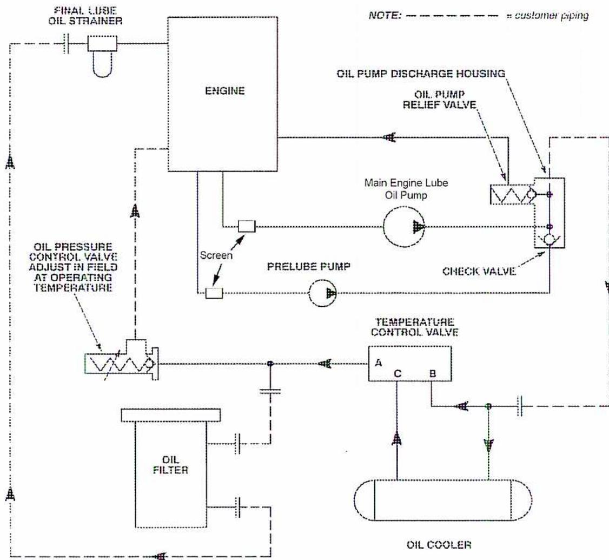
The schematic illustrates the external oil system for an engine. The engine block is at the top center. A 'FINAL LUBE OIL STRAINER' is connected to the top of the engine, with a dashed line leading to the left. Below the engine, a 'Screen' leads to a 'PRELUBE PUMP'. The 'PRELUBE PUMP' output connects to an 'OIL PRESSURE CONTROL VALVE ADJUST IN FIELD AT OPERATING TEMPERATURE'. From this valve, a dashed line leads to an 'OIL FILTER'. The 'OIL FILTER' output connects to a 'TEMPERATURE CONTROL VALVE' which has three ports labeled A, B, and C. Port A is connected to the 'OIL COOLER'. Port B is connected to a dashed line that leads to the 'OIL PUMP DISCHARGE HOUSING'. Port C is connected to the 'MAIN ENGINE LUBE OIL PUMP'. The 'MAIN ENGINE LUBE OIL PUMP' is connected to the 'OIL PUMP DISCHARGE HOUSING', which contains an 'OIL PUMP RELIEF VALVE' and a 'CHECK VALVE'. A dashed line from the 'OIL PUMP DISCHARGE HOUSING' leads back to the 'FINAL LUBE OIL STRAINER' on the engine. A note at the top right states 'NOTE: - - - - - = customer piping'.
Figure 25
External Oil System Schematic
(Courtesy of Waukesha Engine)
The main oil filter is usually a full-flow type, and typically filters up to 10-20 microns. With a clean filter, the differential pressure is about 15-20 kPa. Maximum allowable differential pressure is normally about 100 kPa. An example of a cooler and filter assembly is shown in Fig. 26.
![A detailed black and white photograph of an engine's oil cooling and filtration system. The image shows a complex assembly of metal components, including a large cylindrical 'Main Oil Filter' on the left, a rectangular 'Oil Cooler' at the bottom center, and various pipes and valves. Labels with leader lines identify the 'Oil Pressure Control Valve' at the top, the 'Temperature Control Valve' in the upper middle, the 'Oil Bypass Line' running horizontally across the middle, the 'Main Oil Filter', and the 'Oil Cooler'.](fd955384881fd240be5518d3050588d9_img.jpg)
Figure 26
Oil Cooler and Filter Assembly
(Courtesy of Tom Van Hardevel)
Since the main oil pump cannot supply sufficient pressure until the engine is rotating, a separate electric prelube pump activates on startup to provide initial lubrication prior to and during startup.
Some engines (those used for backup power generation) have quick-start capability aided by a low pressure pump that operates when the engine is not running to minimize startup time.
Objective 7
State the purpose and describe the control of a typical internal combustion engine including the operation of safety devices.
ENGINE CONTROL
The control of a reciprocating internal combustion engine consists of a number of different systems including:
- • Speed governing
- • Ignition control
- • Fuel system control
- • Cooling system control
- • Lubrication system control
- • Safety and engine protection
- • Startup and shutdown sequencing
Most systems incorporate extensive electronic and computerized control and monitoring devices. Various aspects of control, such as oil cooling, are controlled by independent devices such as thermostats. If the equipment is unattended, additional supervisory control and monitoring systems may need to be installed at a remote location.
SAFETY AND PROTECTION SYSTEMS
Protection can be provided by:
- • A local alarm that activates an indicator or audible horn but causes no additional actions
- • A remote alarm that is transmitted to a control centre, pager, or other remote device
- • A normal shutdown with local or remote indication
- • An emergency shutdown with local or remote indication
- • A manual emergency shutdown of the engine via a local panel
Most protection systems use both an alarm and a shutdown, but every situation has to be considered separately. Factors such as the criticality of the equipment, local regulations and conditions, and company practices need to be considered when planning a protection system.
A typical electronic engine protection system is shown in Fig. 27.
![Diagram of an Engine Protection System for a Caterpillar engine. The central component is a control panel labeled 'CATERPILLAR' with various gauges and switches. It is connected to several sensors: Inlet Air Restriction, Starting Air Pressure, Unfiltered Oil Pressure, Filtered Oil Pressure, Jacket Water Temperature, Detonation, Crankcase Pressure, Water Level, and a Transducer Module. The Transducer Module is connected to Oil Pressure and Oil Temperature sensors. Three lines labeled 'Cylinder Temperatures' are also connected to the panel.](d4af765160d04ecef538e5066006dc77_img.jpg)
The diagram illustrates the Engine Protection System for a Caterpillar engine. At the center is a control panel with the 'CATERPILLAR' logo. Various sensors and components are connected to this panel via lines:
- Left side connections: Inlet Air Restriction, Starting Air Pressure, Unfiltered Oil Pressure, Filtered Oil Pressure, Jacket Water Temperature, and three lines for Cylinder Temperatures.
- Right side connections: Detonation, Crankcase Pressure, Water Level, and a Transducer Module.
- Transducer Module connections: Oil Pressure and Oil Temperature.
- Internal panel components: The panel includes a digital display, several analog gauges, and a large rotary switch.
Figure 27
Engine Protection System
(Courtesy of Finning-Caterpillar)
General Engine Operation Protection
Protection for general engine operation may include:
- • Intake air restriction caused by plugging of the intake air filter or blockage of the intake
- • High intake air temperature caused by high ambient temperature or inadequate cooling by the intercooler (for turbocharged engines)
- • Engine overspeed caused by loss of load
- • High vibration caused by a number of different factors such as mechanical failure, unbalance, or misalignment
- • High crankcase pressure due to wear or failure of the piston ring or cylinder
- • High main bearing temperature caused by long term wear or high oil temperature
Fuel System Protection
Fuel system protection may include:
- • Low fuel temperature resulting from failure of the fuel heater
- • High fuel pressure due to failure of the fuel regulator
- • High fuel filter differential pressure due to clogging of the filter
Cooling System Protection
Cooling system protection may include:
- • Low coolant level in the coolant reservoir
- • High jacket water temperature due to failure of cooling or inadequate coolant flow
- • Cooler vibration due to unbalance, or misalignment of the cooler fan
Oil System Protection
Oil system protection may include:
- • Low oil pressure due to failure of the oil pump or a restriction
- • Low oil temperature resulting from failure of the oil heater
- • Low oil level in the sump
- • High oil pressure caused by failure of the oil pump relief valve
- • High oil temperature caused by failure of the oil cooling system
- • High oil filter differential pressure due to clogging of the filter
Combustion System Protection
Protection for combustion systems may include:
- • High exhaust gas temperature (measured by a pyrometer -usually one per cylinder)
- • High exhaust gas temperature spread (difference between the highest and lowest temperature)
- • Activation of a detonation sensor (usually one per cylinder)
Safety Parameters
During startup, relevant safety parameters include:
- • Low starting gas pressure (for an air or gas starter)
- • Excessive cranking time due to a bad starter or insufficient start pressure
- • Low oil pressure caused by cold oil or failure of the prelube pump
Additional protective shutdowns may be added for fire and gas leak detection if the engine is located in a hazardous location.
Chapter Questions
B1.5
- 1. Describe the steps of a four-stroke cycle for a spark-ignition engine.
- 2. What are the differences between a spark-ignition and a compression-ignition engine?
- 3. List the two types of supercharging and describe how they function.
- 4. With the aid of a simple sketch, describe the design of a lean burn fuel system used in a spark ignition engine system.
- 5. Describe three major purposes for engine cooling.
- 6. What are three aspects of oil quality that need to be monitored?
- 7. Discuss four operating conditions for which engine protection is required?